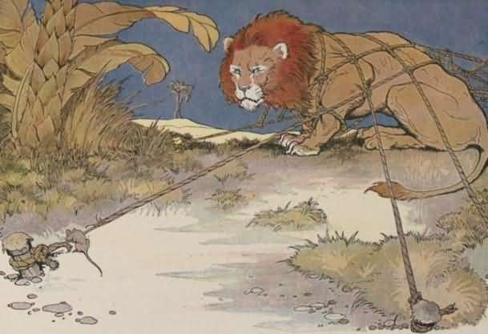

Singa dan Tikus
Ketika itu ada seekor singa sedang tidur dengan lelap di dalam hutan, dengan kepalanya yang besar bersandar pada telapak kakinya. Seekor tikus kecil secara tidak sengaja berjalan di dekatnya, dan setelah tikus itu sadar bahwa dia berjalan di depan seekor singa yang tertidur, sang Tikus menjadi ketakutan dan berlari dengan cepat, tetapi karena ketakutan, sang Tikus malah berlari di atas hidung sang Singa yang sedang tidur. Sang Singa menjadi terbangun dan dengan sangat marah menangkap makhluk kecil itu dengan cakarnya yang sangat besar.
"Ampuni saya!" kata sang Tikus. "Tolong lepaskan saya dan suatu saat nanti saya akan membalas kebaikanmu."
Singa menjadi tertawa dan merasa lucu saat berpikir bahwa seekor tikus kecil akan dapat membantunya. Tetapi dengan baik hati, akhirnya singa tersebut melepaskan tikus kecil itu.
Suatu hari, ketika sang Singa mengintai mangsanya di dalam hutan, sang Singa tertangkap oleh jala yang ditebarkan oleh pemburu. Karena tidak dapat membebaskan dirinya sendiri, sang Singa mengaum dengan marah ke seluruh hutan. Saat itu sang Tikus yang pernah dilepaskannya mendengarkan auman itu dan dengan cepat menuju ke arah dimana sang Singa terjerat pada jala. Sang Tikus kemudian menemukan sang Singa yang meronta-ronta berusaha membebaskan diri dari jala yang menjeratnya. Sang Tikus kemudian berlari ke tali besar yang menahan jala tersebut, dia lalu menggigit tali tersebut sampai putus hingga akhirnya sang Singa dapat dibebaskan.
"Kamu tertawa ketika saya berkata akan membalas perbuatan baikmu," kata sang Tikus. "Sekarang kamu lihat bahwa walaupun kecil, seekor tikus dapat juga menolong seekor singa."
Pesan Moral "Kebaikan hati selalu mendapat balasan yang baik."
Sumber dongeng : http://www.ceritakecil.com/cerita-dan-dongeng/Singa-dan-Tikus-38